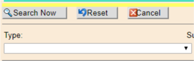

Much of Cardinal's data has the same business name but a different functionality depending on the business unit. Try to make your searches as specific as possible -avoid general terms like sales
or invoices
unless you can filter by one of the additional criteria below.
All searches in the dictionary with a red diamond (♢) are wild card searches.
BSAand the name of the report owner in this field to find the data attributes associated with that report.
By System: In the Name
field, input the system you are interested in. The wild card query will return all results with that system in the name.
By Table: In the Name
field, input the table you are interested in. The wild card query will return all results with that table in the name. No table names have been abbreviated.
By Field: In the Name
field, input the field you are interested in. The wild card query will return all results with that field in the name. No field names have been abbreviated.
By Tower: In the Tower
drop-down, select the PMOD process tower by which you wish to filter your results.
By Subject Area: If you are looking for terms related to a set of business processes, you can try to search by Subject Area. There are currently 21 available values, with more set to be defined in PMOD 2. Use this if you feel confident in the usage of the needed field.
By Type: This a useful filter to narrow down search results.

Entries in the dictionary are currently categorized into three types:
If you still cannot find what you are searching for, please send an email to the Data Leads’ Team Inbox: GMB-PMOD2-DataLeads@cardinalhealth.com